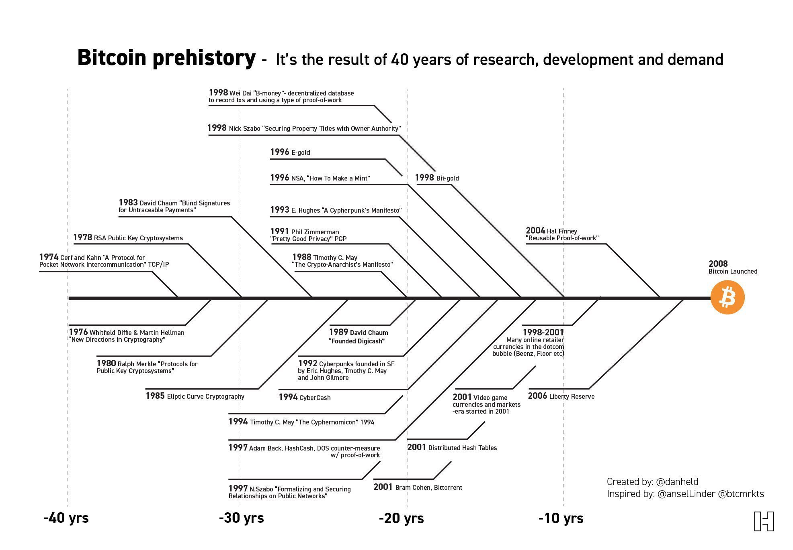
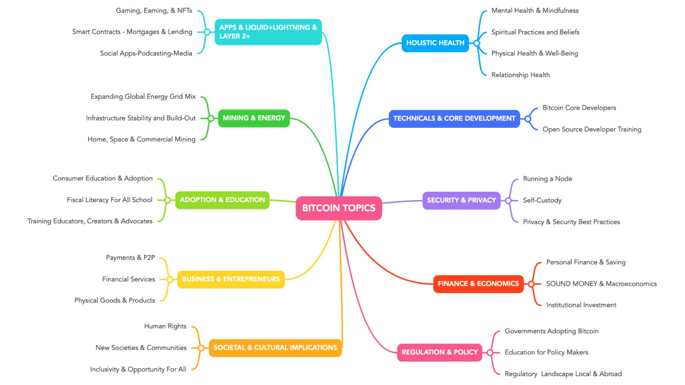
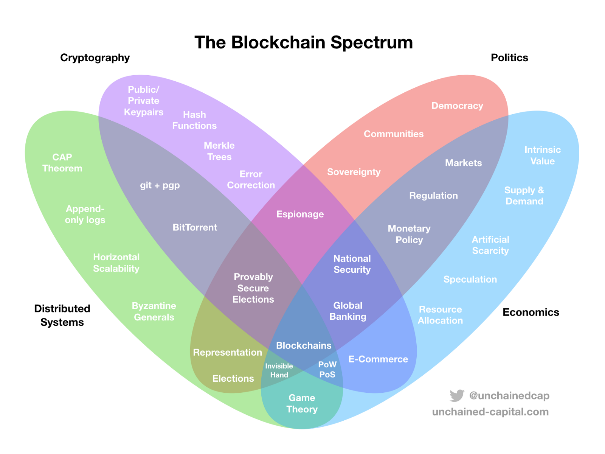

The protection of personal information and individual autonomy in digital and AI systems, encompassing data minimization, purpose limitation, transparency, consent management, and individual control over how personal data is collected, processed, stored, and shared; grounded in legal frameworks (GDPR, AI Act) and technical mechanisms (encryption, differential privacy, zero-knowledge proofs) across the full data lifecycle.
Semantic Classification
Content
- The protection of personal information and individual autonomy in AI systems, encompassing data minimization, purpose limitation, transparency, and individual control over how personal data is collected, processed, stored, and shared throughout the AI lifecycle.
What to use and when
- Start with Simple API Calls:
- Initially, utilize third-party APIs that serve your needs without complicating your system. This is the most straightforward and cost-effective solution.
- If third-party APIs meet your requirements in terms of functionality, privacy, cost, and latency, there’s no need to progress to more complex solutions.
- Deploy Pre-trained Models:
- If API solutions are insufficient due to privacy, cost, or latency issues, consider deploying a generic, pre-trained model (like MixL or LLaMA) behind your own API.
- This step involves a bit more complexity and control over the data but remains relatively simple.
- Curate Context and Improve Prompts:
- Enhance the output quality by curating in-context examples and optimizing prompts. This step aims to extract better performance from the existing deployed model with minimal changes.
- Integrate Retrieval Systems:
- If further improvement is needed, integrate a retrieval system to complement the model’s responses, based on the available latency and the complexity it introduces to your system.
- Fine-tune on Specific Data:
- When adjustments and retrieval integrations aren’t sufficient, proceed to fine-tune the model on a targeted dataset. This step tailors the model more closely to your specific requirements.
- Swap for a Larger Model or Pre-train Your Own:
- If fine-tuning does not achieve the desired outcomes, consider swapping in a larger pre-trained model or pre-training your own model for more significant customization and improvement.
- This can involve domain adaptation through further pre-training on a relevant corpus, followed by fine-tuning.
- Iterate and Add Complexity as Necessary:
- Continue iterating, adding layers of complexity only as needed. This approach ensures that you only invest in higher compute and development costs when there’s a clear benefit.
- Simplify and Streamline for Deployment:
- Throughout this process, aim to simplify and streamline solutions for deployment. Consider the target audience and operationalize the solution in a way that makes it accessible and practical for them.
Privacy and Data Protection Concerns
Pervasive Surveillance
- The deployment of advanced AI systems for surveillance at the 2024 Olympics has raised several privacy concerns:
- Continuous Monitoring: These AI systems enable continuous, round-the-clock monitoring of individuals, capturing detailed data on their movements and behaviours. This level of surveillance is unprecedented and poses significant risks to personal privacy.
- Behavioural Analysis: AI can track and analyse patterns in individuals’ movements and behaviours, potentially revealing sensitive information about their personal lives. This capability raises ethical questions about the extent of surveillance that is acceptable in a democratic society.
Ensuring Safeguarding and Privacy Compliance:
- Protecting user privacy and ensuring safeguarding is vital for any digital society platform. The open-source system must be developed in compliance with legislative and cultural norms while maintaining the balance between user privacy and the need for identity verification and data management. The evidence that social media is damaging youth mental health is very compelling. The Centre for Humane Technology calls social media the ‘first contact point’ with AI, explaining that new technologies often create an arms race. The underlying arms race for attention led to what they call ‘an engagement monster’ that rewrote the rules of society. These lessons should be learnt and the problems should be proactively mitigated. This proposal is not a social metaverse, and deliberately limits both numbers of participants and avatar optionality.
Preference Setup
-
Configuring privacy settings, accessibility options, and other preferences.
-
Utilizing the PrivacySetting entity from the ontology.
-
Example Linked-JSON snippet:
{ "@id": "narrativegoldmine:PrivacySetting", "@type": [ "narrativegoldmine:Class", "Linked-JSON:Class", "http://www.w3.org/2002/07/owl#Class" ], "http://www.w3.org/2000/01/rdf-schema#comment": [ { "@value": "Represents an agent's privacy preferences within the metaverse." } ], "http://www.w3.org/2000/01/rdf-schema#label": [ { "@value": "Privacy Setting" } ] }
Enhanced Privacy and Security
- Self-sovereign identity and privacy-preserving technologies empower users to control their data and protect their privacy.
Security and Privacy
Implement appropriate safeguards:
- Limit access to sensitive systems and data
- Monitor agent actions and decisions
- Implement authentication and authorisation
- Consider data privacy implications
- Plan for incident response and recovery
- Jack Burlinson on X: “In case you were wondering just how cracked the team @cognition_labs is… This was the CEO (@ScottWu46) 14 years ago. https://t.co/UqXTYGVKzO” / X (twitter.com)
https://twitter.com/jfbrly/status/1767653596957642879
- Automating Repetitive Tasks:
- AI offers the potential to automate mundane digital chores. This can revolutionize job efficiency and free up human resources for more creative and complex tasks.
- The development of multimodal models and reinforcement learning is paving the way for richer, more intuitive user experiences, expanding AI’s role in everyday life.
- Logical Reasoning and Decision-Making:
- AI models currently struggle with complex logical reasoning, which impacts their decision-making abilities in nuanced tasks. This limitation is a critical area for future advancements.
- Adaptation to New Environments and Online Learning:
- AI agents need substantial improvements in adapting to new environments and in their capability for online learning. This is crucial for their effective deployment in various real-world scenarios.
- Navigating Complex Web Interfaces:
- Both humans and AI agents find it challenging to navigate and interpret complex web interfaces. This underscores the need for AI systems to improve their adaptation and learning mechanisms.
- Data Privacy and Ethical Use:
- The use of personal data in AI training raises significant ethical concerns. There is a pressing need for stringent measures to responsibly handle personal identifiable information and ensure user privacy.
- Cost and Efficiency Balancing:
- A major challenge lies in running sophisticated AI models economically while maintaining high efficiency. This concern becomes increasingly significant as the technology scales.
Privacy and Surveillance
- The use of AI in areas such as facial recognition and data analysis raises concerns about privacy and the potential for increased surveillance.
A Quick History
-
The 1980s saw the emergence of the Cryptographic Privacy Activist activist movement, as a reaction to the emerging Digital Society Surveillance state,burnham1983rise; @chaum1985security a topic which is expanded in Digital Society Surveillance and Global Inequality . These early computer scientists in the USA saw the intersectionality between information, computation, economics, and personal freedom.lavoie1990prefatory Online discussion in the early nineties foresaw the emergence of trans-national digital markets, what would become the WWW.[[salinCosts; @cypherPunkMailList]] The issues of privacy and the exchange of digital value (digital /ecash) were of foremost importance within these discussions and while privacy was within reach thanks to “public/private keypairs”, ecash proved to be amore difficult problem.
-
Adam Back’s 1997 ‘hashcash’back2002hashcash paved the way for later work by implementing the concept of what would become ‘proof of work.’dwork1992pricing; @jakobsson1999proofs This was built upon by Dai,dai1998b Szabo,szabo1997formalizingFinney,callas1998openpgp and Nakamoto amongst others. In all it took16 years of collaboration on the mailing lists (and dozens of failed attempts) to attack the problem of trust-minimised, distributed, digital cash. The culmination of these attempts was Bitcoin.Nakamoto2008
-
This is illustrated by Dan Held.

-
Dan Held: Bitcoin prehistory used with permission.
-
This is now a wider ecosystem of technologies and societal challenges.

https://twitter.com/djvalerieblove/status/1514703620272394243/
- used with permission @djvalerieblove.
- There is enormous complexity and scope, as seen in below, and yet genuinely useful products are elusive.

{width 800}
Generating a Secret for Blind Signatures
- Implement JavaScript code to generate a new secret key. This key will be essential for creating blind signatures, a cornerstone of Cashew’s privacy features.
- Utilize cryptographic libraries available in JavaScript for secure key generation.
Requesting a Blinded Signature from the Mint
- Once the invoice payment is confirmed, request a blinded signature for a specified ecash amount from the mint. This signature is necessary for the mint to acknowledge your ecash holdings without compromising privacy.
Unblinding the Signature
- Use the previously generated secret key to unblind the mint’s signature. This process converts the blinded signature into a form usable for transactions while maintaining the integrity of the privacy guarantees.
User Privacy
- The user’s knowledge base is kept local to their device, using hashes to retrieve personalised content, which enhances AI Governance Law and Privacy by avoiding centralized data collection and tracking.
- Hyper personalisation and Dynamic Creative Optimisation (DCO)
- The system delivers content optimised for the user’s language, environment, age, and other demographic factors using AI-powered multi-modal product representations.
- DCO techniques dynamically adapt and optimise creative elements in real-time based on user interactions and preferences.
ideas.json
[
{
"Name": "local_ai_personalization",
"Title": "Client-Side AI for Hyper-Personalization: Enhancing User Experience While Preserving Privacy",
"Experiment": "Develop a client-side AI system that uses local embeddings to personalize content based on user preferences and interactions. The system will generate personalized multimedia assets in real-time, using local data while maintaining privacy by not sharing any data with external servers. Evaluate the system's performance in terms of user engagement, content relevance, and privacy preservation.",
"Interestingness": 8,
"Feasibility": 7,
"Novelty": 8,
"novel": true
},
{
"Name": "nostr_dynamic_content_optimization",
"Title": "Dynamic Content Optimization Using Nostr Relay Protocol: A Decentralized Approach",
"Experiment": "Implement a dynamic content optimization system that leverages the Nostr relay protocol for real-time content delivery. The system will match content from a distributed network of vendors to users based on locally generated embeddings. Test the system's effectiveness in delivering relevant content while preserving user data sovereignty and minimizing latency.",
"Interestingness": 9,
"Feasibility": 7,
"Novelty": 8,
"novel": true
},
{
"Name": "privacy_preserving_dco",
"Title": "Privacy-Preserving Dynamic Creative Optimization: Leveraging Local AI and Heuristic Matching",
"Experiment": "Design a DCO system that operates entirely on the client side, using heuristic matching to personalize marketing content. The system will use local AI to generate and optimize creative assets without sending any data to external servers. Assess the system's ability to balance personalization and privacy, and compare its performance with traditional server-based DCO systems.",
"Interestingness": 9,
"Feasibility": 8,
"Novelty": 9,
"novel": true
},
{
"Name": "vendor_embedding_optimization",
"Title": "Optimizing Vendor Embeddings for Multimedia Content Personalization",
"Experiment": "Develop a system that creates and optimizes vendor embeddings to personalize multimedia content for users. The system will use local AI to match user preferences with vendor content, ensuring high relevance while preserving privacy. Evaluate the quality of the personalized content and the effectiveness of the embedding optimization.",
"Interestingness": 8,
"Feasibility": 7,
"Novelty": 8,
"novel": true
},
{
"Name": "multimodal_asset_generation",
"Title": "Multimodal Asset Generation Using Local AI and Nostr Protocol",
"Experiment": "Create a system that generates personalized multimodal assets (e.g., text, images, videos) using local AI models. The system will use the Nostr relay protocol to pull relevant content from vendors and integrate it into the user's local environment. Test the system's ability to deliver high-quality personalized content without compromising user privacy.",
"Interestingness": 9,
"Feasibility": 7,
"Novelty": 8,
"novel": true
}
]prompt.json
{
"system": "You are an innovative AI researcher focused on exploring the intersection of privacy, personalization, and decentralized content delivery.",
"task_description": "You are provided with the following file to work with, which explores various approaches to client-side hyper-personalization, dynamic creative optimization, and dynamic content optimization using the Nostr relay protocol, embeddings, and local AI. Your task is to develop a series of small-scale experiments to investigate the potential and challenges of these approaches."
}Extended Reality / Mixed Reality / Spatial Computing Paradigm
- XR (VR/AR/MR) will eventually become the primary way we interact with digital information, as it aligns with how our brains naturally process information in 3D space. The merging of the physical and digital worlds is inevitable
- The metaverse, while currently overhyped, ultimately represents the future of an interconnected network of virtual worlds. As XR technology advances, we will increasingly operate in virtual worlds as naturally as we do in the physical world today
- The early metaverse will start off as walled gardens controlled by large tech companies. However, it’s plausible that more open standards, interoperability, and decentralization will emerge over time, similar to the evolution of the early Internet
- Bystander privacy is a major concern with always-on AR glasses and headsets. People may have their data captured without consent just by being in the presence of someone wearing XR devices
- XR and AI are highly complementary and will help address each other’s limitations. AI will make the metaverse possible, while the metaverse will provide an outlet for human creativity and self-actualization in a post-labor world
- XR has the potential to greatly enhance fields like medicine, education, and industrial design by providing rich spatial computing interfaces.
- The lack of compelling content and experiences has been a limiting factor for XR adoption. However, AI-generated assets could help solve this content bottleneck and enable the rapid creation of photorealistic virtual worlds
- Privacy and security remain ongoing concerns in XR ecosystems, as they capture even more biometric and behavioral data than traditional computing interfaces
- VR in particular still faces physiological challenges around multi-sensory immersion (e.g. locomotion) that will need to be solved before the technology can go fully mainstream
Convergence
- The intersection of AI, XR, and open, decentralized networks represents a powerful convergence of technologies that could reshape the fabric of our social and economic lives. By leveraging the unique strengths of each domain
- the immersive power of XR, the intelligence and adaptability of AI, and the openness and composability of decentralized protocols
- we can create a more vibrant, dynamic, and equitable digital future. However, realizing this potential will require careful design, collaboration, and governance to ensure that these technologies develop in a way that promotes human agency, privacy, and flourishing.
- AI and XR are deeply intertwined and mutually reinforcing technologies
- AI is a critical enabler for XR, powering key functionalities like environment understanding, natural interaction, and content creation
- XR provides a rich, immersive interface for AI systems to interact with humans and the physical world
- The combination of AI and XR will give rise to new forms of human-machine collaboration and augmentation
- AI-powered virtual assistants will be deeply integrated into XR environments, providing real-time guidance, knowledge, and skills enhancement
- XR will provide a spatial computing platform for AI systems to learn from and interact with the world in more natural and intuitive ways
- The intersection of AI and XR will blur the lines between the physical and digital worlds
- AI will enable the creation of photorealistic virtual environments that are increasingly indistinguishable from reality
- XR will allow for seamless blending of digital content and experiences into the physical world, creating a unified “metaverse”
- AI and XR will intersect to create new forms of social interaction and collaboration
- AI-driven avatars and agents will facilitate rich, immersive social experiences in virtual worlds
- XR will provide a shared spatial context for humans and AI systems to interact and collaborate in real-time
- The intersection of AI and XR will give rise to new economic models and value creation opportunities
- Virtual goods, experiences, and services will become increasingly valuable in immersive XR environments
- AI will enable the creation of personalized, adaptive, and intelligent virtual assets and experiences
- The combination of AI and XR will raise new ethical and societal challenges
- The blurring of physical and digital reality may have profound impacts on privacy, identity, and social norms
- The increasing power and pervasiveness of AI systems in XR environments may raise concerns around control, transparency, and accountability
- Open, decentralized networks will be critical for enabling seamless value transfer and interoperability in the metaverse
- Centralized, walled-garden approaches will limit innovation and user choice
- Open standards and protocols will allow for greater composability and network effects
- Blockchain technologies like Bitcoin, particularly with Layer 2 and Layer 3 solutions, can provide a foundation for secure, efficient, and scalable value transfer in XR/AI ecosystems
- Bitcoin’s decentralized, trustless architecture aligns well with the open, permissionless ethos of the metaverse
- Layer 2 solutions like Lightning Network can enable fast, low-cost microtransactions for virtual goods and services
- Layer 3 protocols can enable additional functionality and interoperability on top of the core Bitcoin blockchain, including governance models
- Cryptographic tokens and smart contracts can enable new forms of value creation, ownership, and exchange in XR/AI environments
- Unique and fungible digital objects (RGB20/21) can provide provable ownership and scarcity for virtual assets at scale
- Decentralised autonomous organizations (DAOs) can enable new forms of community governance and collaboration
- Interoperability and composability will be key for enabling value transfer across different XR/AI platforms and experiences
- Open standards for identity, asset ownership, and data portability will allow users to seamlessly move between virtual worlds
- Bridges and cross-chain protocols can enable value transfer and communication between different blockchain networks
- Decentralised finance (DeFi) protocols can provide new avenues for earning, investing, and monetising value in XR/AI ecosystems
- Virtual real estate, goods, and services can be tokenized and traded on decentralized exchanges
- Lending, borrowing, and staking protocols can provide new ways to generate yield and incentivize participation
- Privacy and security will be critical considerations for value transfer in open XR/AI networks
- Zero-knowledge proofs and other advanced cryptographic techniques can enable privacy-preserving transactions and interactions
- Multi-party computation and secure enclaves can allow for trustless collaboration and data sharing between AI agents
- Disney invests $1.5bn in Fortnite maker Epic Games to create new ‘universe’ | Walt Disney Company | The Guardian
Surveillance Capitalism
- Surveillance capitalism is a term coined by Harvard Business School professor Shoshana Zuboff to describe the business model of using data collected from individuals to target advertising and influence behaviour. The concept of surveillance capitalism emerged in the late 20th and early 21st centuries with the rise of technology companies thatspecialize in gathering and analyzing personal data.
- The history of surveillance capitalism can be traced back to the early days of the internet. In the 1990s, companies such as DoubleClick andOmniture began collecting data on internet users’ browsing habits inorder to target advertising. As the internet grew in popularity, these companies were able to gather an increasing amount of data on individuals, allowing them to more effectively target advertising and increase profits.
- The advent of smart phones and mobile technology in the 2000s further expanded the reach of surveillance capitalism. With the widespread adoption of smart phones and mobile apps, companies were able to collect even more data on individuals, including location data and information about their physical activity. This data was used to target advertising and influence behaviour, leading to the rise of companies such as Google and Facebook, which have become dominant players in the digital advertising market.
- The use of data collected from individuals to influence behaviour has also been used to influence political campaigns. In the 2016 USpresidential election, Cambridge Analytica, a data analytics firm, used data collected from Facebook users to influence voter behaviour. The firm used the data to target advertising and create psychological profiles of individuals, allowing them to more effectively influence voter behaviour.
- The business model of surveillance capitalism has been widely criticised for its ethical implications. Critics argue that the collection and useof personal data without consent is a violation of individuals’ privacyand that the use of data to influence behaviour is manipulative and unethical. In recent years, there have been calls for greater regulationof the tech industry to address these concerns.
- Surveillance capitalism has led to significant compliance overheads for companies that collect and use personal data. There are a number of laws and regulations that have been put in place to protect individuals’ privacy, such as the General Data Protection Regulation (GDPR) in theEuropean Union and the California Consumer Privacy Act (CCPA) inCalifornia, USA. These laws require companies to obtain consent from individuals before collecting and using their data, and to provide individuals with the right to access, correct, and delete their data.
- Complying with these laws can be costly and time-consuming for companies. They may need to hire additional staff to handle data privacy compliance, and may also need to invest in new technology to manage andprotect personal data. In addition, companies are at risk of significant fines if they fail to comply with these laws.
- In terms of who profits from surveillance capitalism, the primary beneficiaries are technology companies such as Google and Facebook,which have become dominant players in the digital advertising market.These companies collect and analyse large amounts of personal data,which they use to target advertising and influence behaviour. This allows them to generate significant profits from advertising revenue.
- On the other hand, those who suffer the most negative impact from surveillance capitalism are individuals, whose personal data is collected and used without their consent. They are also at risk of theirprivacy being violated, and their personal data being misused. Additionally, the collection and use of personal data can lead to themanipulation of individuals’ behaviour and decision-making, which can have negative consequences for their lives and society at large.
- Moreover, the business model of surveillance capitalism has also been criticized for creating a power imbalance between companies and individuals. Companies have access to vast amounts of personal data,which they can use to influence behaviour and make decisions that affect individuals’ lives. This can lead to a lack of privacy and autonomy for individuals, and can also lead to discrimination and bias indecision-making.
- This is collectively an erosion of the demarcation between data, state surveillance, banking, and political leadership globally.
- The term “surveillance state” refers to a state in which government agencies have the power to collect and analyze large amounts of personal data, often without the consent of individuals. The rise of surveillance capitalism has led to concerns about the potential for the creation of a surveillance state, as government agencies may use the data collected by companies for surveillance purposes.
- There have been instances where government agencies have used data collected by companies for surveillance purposes. For example, in theUnited States, the National Security Agency (NSA) has been accused of using data collected by companies such as Google and Facebook for surveillance purposes. The agency’s PRISM program, which was revealed byEdward Snowden in 2013, was designed to collect and analyse data from internet companies in order to identify and track individuals. Europe isclear about it’sintentions to mandate their complete access to all encrypted personal communications in forthcoming legislation.
- The use of data collected by companies for surveillance purposes canhave significant implications for individuals’ privacy and civil liberties. It can also lead to a lack of transparency and accountability, as government agencies may use the data without the knowledge or consent of individuals. In addition, the use of data for surveillance purposes can lead to discrimination and bias indecision-making, as well as a chilling effect on free speech and the exercise of other rights.
- Akten has been talkingaboutthe phase transition from digital surveillance to pernicious corporateAI in terms of a modern ‘religion’ for many years.bayer2023artificialHe feels that despite public awareness of privacy invasion, there hasbeen no significant outcry or unanimous demand for privacy. Instead,most individuals seem to find comfort in the belief that a higher forceis watching and protecting the virtuous, while punishing wrongdoers. The concept of a ‘digital deity’ emerge from his thinking in this context,reflecting the role that religion and traditional gods have played in providing ethical frameworks, security, discipline, power, and other societal functions. More recently O’Gieblyn has been drawing the same conclusions,o2021god explicitly linking religiosity to the imperative to ‘create a godhead’ simply because it can be done, not pausing to discuss if it should be. Rosenberg calls this ‘a threat to EpistemicAgency’rosenbergmanipulationMore recently the Harari, author ofSapiensharari2014sapiens said ofAI: it“For thousands of years, prophets and poets and politicians have used language and storytelling in order to manipulate and to control people and to reshape society. Now AI is likely to be able to do it. And once it can… it doesn’t need to send killer robots to shoot us. It can get humans to pull the trigger. We need to act quickly before AI gets out ofour control. Drug companies cannot sell people new medicines without first subjecting these products to rigorous safety checks.” (AI will be discussed in detail in a later chapter).
- Klein at the New York Times has been writing against thispointfor some time. His well articulated fear, is that the current model where three major Western companies, with similar highly competitive capitalist origins and values, should certainly not be in charge ofracing to monetise the most compelling and innately unknowable chat bot experience. As societies shift towards materialism and technological dependence, traditional gods lose their relevance, and the need for anew form of overseer arises. This digital deity, existing within therealm of technology and the cloud, perhaps represents an adaptation of primal human belief systems. This will be explored further in the AI/MLchapter later.
- In conclusion, the rise of surveillance capitalism has led to concerns about the potential for the creation of a surveillance state, or worse,a new kind of omnipresent digital culturla authority. Corporations and government agencies may use the data collected by companies for surveillance purposes. This can have significant implications for individuals’ privacy and civil liberties. It’s important for laws and regulations to be in place to safeguard citizens’ rights and privacy inregards to the use of data by government agencies, and to hold them accountable for any misuse of data, and yet it seems the reality of the situation in ‘post Snowden’ seems far from that.
- Surveillance Capitalism. As a quick round-up of this area, which is best researched elsewhere:
- The global digital advertising market is expected to reach $335 billion by 2023.
- In 2020, Google and Facebook accounted for 60% of the global digital advertising market.
- The data brokerage industry, which includes companies that collect and sell personal data, is estimated to be worth $200 billion.
- In 2020, Google and Facebook were reported to have data on over 4 billion active users.
- As of 2021, the number of data breaches reported worldwide has grown from 4.1 billion in 2018 to 4.9 billion in 2020.
- In 2013, it was revealed that the US National Security Agency (NSA) had been collecting the phone records of millions of Americans under its PRISM program.
- In 2013, Edward Snowden leaked classified documents that revealed the scale of the NSA’s surveillance programs.
- In the US, the Foreign Intelligence Surveillance Act (FISA) allows the government to conduct surveillance on non-US citizens outside the US without a warrant.
- The UK’s Investigatory Powers Act 2016, also known as the “snooper’s charter,” gives government agencies wide-ranging powers to collect and analyze personal data.
- In 2021, it was reported that the Chinese government has been collecting and analyzing the data of its citizens through a system of “social cred* scores, which are used to monitor and control individuals’ behaviour.
- Surveillance capitalism refers to the business model of collecting and analyzing personal data for the purpose of targeted advertising and other forms of monetization.
- A recent study by the Center for Digital Democracy found that the top 100 global digital media companies are projected to generate over $1 trillion in revenue by 2020, much of which is derived from surveillance-based advertising.
- The number of surveillance cameras in use worldwide is estimated to be over 1 billion, with the majority located in China.
- A 2018 study by Comparitech found that the average person in the UK is captured on CCTV cameras over 300 times per day.
- According to a report by the American Civil Liberties Union (ACLU), the FBI has access to over 640 million photographs for facial recognition searches, including driver’s license and passport photos.
- The U.S. government’s use of surveillance technologies, such as drones and mass data collection, has been a subject of ongoing controversy and debate.
- Some experts warn that the increasing use of surveillance technologies by governments and private companies could lead to the erosion of privacy rights and the creation of a *surveillance state.”
- In the USA senate hearing following the collapse of FTX Rep. Jesus Garcia described bitcoin and crypto as an industry that operates outside of the law and relies on hype, implying that the communities that have adopted bitcoin are ill-informed and vulnerable.
- Bitcoin has been adopted by a variety of communities worldwide, particularly in countries such as Vietnam, the Philippines, Ukraine, India, Pakistan, Brazil, Thailand, Russia, and China.
- There is an outsized level of adoption among Black Americans in the United States. This trend is not a result of targeted advertising by companies such as FTX, but rather a response to a legacy financial system that has limited individuals’ potential.
- Marginalized early adopters of bitcoin still constitute a minority in their communities, but the worldwide adoption trend among these groups is on the rise.
- The solutions that outsiders build in bitcoin will ultimately be the source of the technology’s promised revolution. Adoption in Africa and possibly India seems likely to be capable of driving this.
- The paradigm shift will come from those who bring local, real-world focused use cases to their communities, separating bitcoin from the empty hype of speculation.
- Marginalized communities will lead the industry’s recovery and redefine the purpose of bitcoin in the future.
Tech money in Civil Society
https://twitter.com/youranonnews/status/1816298460645068879
- Big Tech firms donate substantial funds to charities, think tanks, academic research, and lobbying efforts to shape narratives and policy around tech regulation. Goldenfein Mann 2024
- Tracking financial flows from Big Tech to DRCSOs is challenging due to limited transparency, but available data shows ongoing funding relationships.
- Through class action cy pres settlements, Big Tech firms direct funds to DRCSOs that purport to represent class interests, but may actually advance the firms’ preferred policy narratives.
- Funding from Big Tech raises questions about potential conflicts of interest for DRCSOs and whether they truly represent the public interest as opposed to aligning with industry agendas.
- The authors argue Big Tech philanthropy allows economic power to translate into political and cultural capital, enabling the firms to continue profiting from problematic data practices while avoiding meaningful regulation.
- Much of the following text is paraphrased from the work of Guy Turner of‘The Coin Bureau’, and Lawyer and academic Eden Moglen, and needs more work because of it’s critical importance to the book. Knowledge Artefact Update Cycle
- The adoption of printing by Europeans in the 15th century led to concerns around access to printed material. The right to read and the right to publish were central subjects in the struggle for freedom of thought for most of the last half millennium. The basic concern was forthe right to read in private and to think, speak, and act based on a free and uncensored will. The primary antagonist for freedom of thought at the beginning of this struggle was the universal Catholic Church, an institution aimed at controlling thought in the European world through weekly surveillance of individuals, censorship of all reading material,and the ability to predict and punish unorthodox thought. In early modern Europe, the tools available for thought control were limited, but they were effective. For hundreds of years, the struggle centred around the book as a mass-manufactured article in Western culture, and whether individuals could print, possess, traffic, read, or teach from books without the permission or control of an entity empowered to punish thought. By the end of the 17th century, censorship of written material in Europe began to break down in waves throughout the European world,and the book became an article of subversive commerce, undermining the control of thought.
- Currently, a new phase in human history is beginning as we are building a single extraneous digital nervous system, that will connect every human mind. Within two generations, every single human being will be connected to this network, in which all thoughts, plans, dreams, and actions will flow as nervous impulses. The fate of freedom of thought and human freedom as a whole will depend upon the organization of thisnetwork. Our current generation is the last in which human brains will be formed without contact with this network, and from now on, every human brain will be formed from early life in direct connection to the network, with input from generative AI/ML systems. This possibly results in humanity becoming a super organism of a sort, where each of us is buta neuron in the brain. Unfortunately, this generation has been raised to be consumers of media, which is now consuming us.
- Anonymous reading is being determined against. Efforts discussed throughout this graph to ensure privacy, from Zimmerman and the cypherpunks onward, have been met with resistance from government efforts to monitor and control information flow. The outcome of the organization of this network, and the freedom it allows, is currently being decided by this generation.
- It is not solely the ease of surveillance, nor solely the permanence of data, that is concerning, it is the relentless nature of living after the “end of forgetting”. Today’s encrypted traffic, which is used with relative security, will eventually be decrypted as more data becomes available for crypto analysis. This means that security protocols will need to be constantly updated and redone. Furthermore, no information is ever truly lost, and every piece of information can be retained and eventually linked to other information. This is the rationale behind government officials who argue that a robust social graph of the UnitedStates is needed. The primary form of data collection that should be of most concern is media that is used to spy on us, such as books that watch us read them and search boxes that report our searches to unknown parties. There is a lot of discussion about data coming out ofMeta/Facebook, but the true threat is code going in. For the past 15years, enterprise computing has been adding a layer of analytics on topof data warehouses, which is known as business intelligence. This allows for the vast amount of data in a company’s possession to be analysed and used to answer questions the company did not know it had. The real threat of Facebook is the business intelligence layer on top of theFacebook data warehouse, which contains the behaviour of nearly a billion people. Intelligence agencies from around the world want toaccess this layer in order to find specific classes of people, such as potential agents, sources, and individuals that can be influenced or tortured. The goal is to run code within Facebook to extract this information, instead of obtaining data from Facebook, which would be dead data once extracted. Facebook wants to be a media company andcontrol the web, but the reality is the true value of Facebook is the information and behaviour of it’s users, and the ability to mine that data. Distributed internet protocols are important in the context of government overreach into digital society and people’s private livesbecause they provide a level of decentralization and resilience that canhelp protect against censorship and surveillance.
- For example, if a government were to attempt to censor or block access to a centralized internet service, it could potentially do so with relative ease. However, if that same service were distributed across anetwork of nodes, it would be much more difficult for the government to effectively censor or block access to it.
- Another advantage of distributed protocols is that they are typically more resilient to attacks or failures. If one node in the network goes offline or is compromised, the others can continue to operate, ensuring that the service remains available. This can be especially important in situations where the internet is being used for critical communication,such as during a natural disaster or political crisis.
- In addition to their benefits for censorship resistance and resilience,distributed protocols can also help protect people’s privacy. Because they do not rely on centralized servers or infrastructure, they can bemore difficult for governments or other entities to monitor or track.This can be especially important in countries where government surveillance is prevalent or where individuals may be at risk of persecution for their online activities.
- There are a number of distributed protocols that have been developed specifically to address issues of censorship and privacy, and these will be covered in more detail later.
- It is important to note that distributed protocols are not a silver bullet for censorship or privacy concerns. They can be vulnerable to certain types of attacks, such as those that target the nodes of the network, and they may not always be practical for certain types of applications. However, they do provide an important tool for those seeking to protect their freedom of expression and privacy online. They offer a valuable tool for those seeking to protect their freedom of expression and privacy online, and they will likely continue to play a critical role in the future of the internet.
- In recent years, several countries have proposed or passed bills that would result in unprecedented levels of online censorship. One such example is Canada’s Bill C-11, also known as the Online Streaming Act.This bill was first proposed in November 2020 as Bill C-10, but failed to pass due to its controversial provisions. It was reintroduced inFebruary 2021 as Bill C-11 and was approved by the Canadian House ofCommons, the first step in the process of becoming law. If passed, the bill would give the Canadian Radio, Television and TelecommunicationsCommission (CRTC) the power to decide what content Canadians can view onYouTube and other social media platforms. The CRTC would also have the power to dictate what content creators can produce, with a focus on promoting “Canadian content.” Additionally, the bill would require certain broadcasters to contribute to the Canada Media Fund, which is used to fund mainstream media in Canada. The bill is currently being considered by the Canadian Senate, which will vote on it in February. If passed, it will then be debated by the Canadian Parliament. Tech companies such as YouTube have reportedly failed to convince the Senate to exclude user-generated content from the bill, indicating a high likelihood of it becoming law. The potential impact on the internet andfree expression in Canada is significant, as the bill would give the government significant control over online content and restrict the ability of individuals to share their views and perspectives.
- In a similar vein the forthcoming RESTRICT act in the USA gives hugepowers without oversight to a single branch of the US government.
- The bill is called the “Restricting the Emergence of Security Threats that Risk Information and Communications Technology Act”
- It was initially thought to be about banning TikTok due to its connections to the Chinese government and the data it collects on its users.
- The RESTRICT Act has very little to do with banning TikTok and instead grants the US Secretary of Commerce significant powers to determine which entities are foreign adversaries and what technology poses a risk to national security.
- The bill defines critical infrastructure broadly, which means it could apply to almost anything the government deems necessary. Lobbyists will be allowed to advise the Secretary of Commerce on which products and services should be labeled as foreign adversaries, potentially leading to monopolies.
- Fines and jail time for interacting with foreign adversaries or posing a risk to national security could reach up to $1 million, 20 years in prison, and asset seizures.
- The bill aims to crack down on VPNs (Virtual Private Networks), which provide privacy and access to foreign websites.
- There is no oversight for the actions taken by the Secretary of Commerce under this act, and neither Congress nor the courts can request information on these decisions.
- The European Union (EU) has separated its online censorship efforts into two separate bills: the Digital Markets Act and the Digital Services Act. These bills were introduced in December 2020 and are part of the EU’s Digital Services package, which aims to be completed by 2030. The Digital Services package is the second phase of the EU’s digital agenda, which is being enforced through regulation in the public sector and through ESG investing in the private sector. Both the Digital Markets Act and the Digital Services Act were passed in spring 2022 and went into force in autumn 2022, but will not be enforced until later this year and early next year, depending on the size of the relevant entity. The Digital Markets Act aims to increase the EU’s competitiveness in the tech space by imposing massive fines on “gatekeepers,” or companies that maintain monopolies by giving preference to their own products and services. This could open the door to innovation in cryptocurrency in the EU, but also requires gatekeepers to provide detailed data about the individuals and institutions using their products and services to theE U. The Digital Services Act, on the other hand, aims to regulate the content that is available online, including user-generated content. It does this by requiring companies to remove illegal content within one hour of it being reported and by imposing fines for non-compliance. The act also requires companies to implement measures to protect users from illegal content and from “other forms of harm,” which is defined broadly and could include a wide range of content. The EU is also in the process of passing the Artificial Intelligence Regulation Act, which will be discussed later this year and is reportedly the first of its kind. All five bills in the EU’s Digital Services package are regulations, meaning they will override the national laws of EU countries. The potential impact on the internet and free expression in the EU is significant, as the Digital Services Act would give the government significant control over online content and restrict the ability of individuals to share their views and perspectives.
- In the United States, two significant documents related to online censorship are the Kids Online Safety Act and the Supreme Court caseGonzalez v. Google. The Kids Online Safety Act was introduced inFebruary 2021 and is expected to pass later this year due to bipartisan support. The act requires online services to collect Know Your Customer(KYC) information to ensure that they are not showing harmful content tominors. It also gives the Federal Trade Commission (FTC) the power to decide when children have been made unsafe online and allows parents tosue tech companies if their children have been harmed online. The act has received criticism from both sides of the political spectrum and entities outside of Congress, as it is seen as giving too much power tothe government to regulate online content and could lead to increased censorship by tech companies.
- The Supreme Court case Gonzalez v. Google involves the question of whether Google’s algorithmic recommendations supported terrorism and contributed to the 2015 terrorist attacks in Paris. The case has been picked up by the Supreme Court after being passed up by various courts of appeal. It is being heard alongside another case, Twitter v. Tumne, involving the role of Twitter’s algorithms in a terrorist attack in Istanbul. There are two potential outcomes for the case. If the Supreme Court sides with Gonzalez, it could increase the liability of social media companies under Section 230 of the Communications Decency Act, which allows them to moderate content to a limited extent without violating the First Amendment. Alternatively, the Supreme Court could declare Section 230 unconstitutional, which would make online censorship illegal but also hinder the use of algorithms on the internet. The ideal outcome, in theory, would be for the Supreme Court to side with Google and for Congress to change Section 230. However, giving Congress the power to change the law could lead to increased censorship and the potential for abuse of power.
- In the UK forthcoming legislation will see tech company leaders liablefor prison sentences if they fail in their duty to protect minors. This will doubtless lead to both stringent universal requirements for identity proof (KYC), and significantly muted and controlled content on the platforms.
- Our research focuses on business to business use cases for distributed technologies, and will provide mechanisms for verifying who is communicating with whom, to avoid falling foul of these swinging global infringements on privacy.
- It is the opinion of this book that information should befreeswartz2008guerilla
Rewind Pendant
- Description: A wearable device designed to aid memory by passively capturing audio throughout the day.
- Features:
- Auto-records ambient sound
- Privacy-focused with user-controlled storage
- Lightweight and can be worn as a necklace
- Integrates with an app for audio playback
- AI Aspect: Uses AI to intelligently capture and categorize important sound bites.
LM Studio
- Description: Standalone desktop application for local inference.
- Features:
- Easy to use with a modern UI.
- Suitable for new users and traditional “Windows-style” workflows.
- Limitations: Closed source; outbound connections for updates raise privacy concerns.
- Link: LM Studio
Approach and Innovation
- Method: Utilizing high-resolution machine vision cameras and AI algorithms for capturing human presence and emotions
- Innovation: Seamless tracking without requiring wearables, anonymized data processing for privacy
- AI Utilization: Trustworthy and responsible use of AI in capturing visitor data
Competitive Advantages
- Unique Capabilities: Capturing gaze vectors, emotion, and attention metrics with high granularity
- Seamless Integration: No need for proprietary hardware or sensors
- Privacy Focus: Minimal, anonymized data collection
- Partnerships: Strategic collaborations with experience designers and creative industries
What to use and when
- Start with Simple API Calls:
- Initially, utilize third-party APIs that serve your needs without complicating your system. This is the most straightforward and cost-effective solution.
- If third-party APIs meet your requirements in terms of functionality, privacy, cost, and latency, there’s no need to progress to more complex solutions.
- Deploy Pre-trained Models:
- If API solutions are insufficient due to privacy, cost, or latency issues, consider deploying a generic, pre-trained model (like MixL or LLaMA) behind your own API.
- This step involves a bit more complexity and control over the data but remains relatively simple.
- Curate Context and Improve Prompts:
- Enhance the output quality by curating in-context examples and optimizing prompts. This step aims to extract better performance from the existing deployed model with minimal changes.
- Integrate Retrieval Systems:
- If further improvement is needed, integrate a retrieval system to complement the model’s responses, based on the available latency and the complexity it introduces to your system.
- Fine-tune on Specific Data:
- When adjustments and retrieval integrations aren’t sufficient, proceed to fine-tune the model on a targeted dataset. This step tailors the model more closely to your specific requirements.
- Swap for a Larger Model or Pre-train Your Own:
- If fine-tuning does not achieve the desired outcomes, consider swapping in a larger pre-trained model or pre-training your own model for more significant customization and improvement.
- This can involve domain adaptation through further pre-training on a relevant corpus, followed by fine-tuning.
- Iterate and Add Complexity as Necessary:
- Continue iterating, adding layers of complexity only as needed. This approach ensures that you only invest in higher compute and development costs when there’s a clear benefit.
- Simplify and Streamline for Deployment:
- Throughout this process, aim to simplify and streamline solutions for deployment. Consider the target audience and operationalize the solution in a way that makes it accessible and practical for them.
Currently in the Ontology
- DigitalAsset:
- Properties:
genesis: (xsd:string) The Bitcoin transaction ID where the asset was created.issuance: (linkedjson:ObjectProperty,range:metaverse:RGBschema) Links to the specific RGB schema used for the asset’s issuance.type: (xsd:string) Specifies the type of asset (e.g., “collectible”, “virtual_item”, “tokenized_right”).currentOwner: (linkedjson:ObjectProperty,range:metaverse:MetaverseAgent) Links to the agent who currently owns the asset.ownershipHistory: (linkedjson:ObjectProperty,range:metaverse:OwnershipTransfer) Represents the chain of ownership transfers for the asset.
- Properties:
- OwnershipTransfer:
- Properties:
from: (linkedjson:ObjectProperty,range:metaverse:MetaverseAgent) The agent transferring ownership.to: (linkedjson:ObjectProperty,range:metaverse:MetaverseAgent) The agent receiving ownership.timestamp: (xsd:dateTime) The date and time of the transfer.transactionId: (xsd:string) The Bitcoin/Lightning Network transaction ID associated with the transfer.
- Linked-JSON representation:
{ "@id": "https://www.narrativegoldmine.com/metaverse#OwnershipTransfer", "@type": "Class", "label": "Ownership Transfer", "comment": "Represents the transfer of ownership of a DigitalAsset between agents.", "properties": { "from": { "@id": "https://www.narrativegoldmine.com/metaverse#from", "@type": "Property", "range": "https://www.narrativegoldmine.com/metaverse#MetaverseAgent", "comment": "The agent transferring ownership." }, "to": { "@id": "https://www.narrativegoldmine.com/metaverse#to", "@type": "Property", "range": "https://www.narrativegoldmine.com/metaverse#MetaverseAgent", "comment": "The agent receiving ownership." }, "timestamp": { "@id": "https://www.narrativegoldmine.com/metaverse#timestamp", "@type": "Property", "range": "http://www.w3.org/2001/XMLSchema#dateTime", "comment": "The date and time of the transfer." }, "transactionId": { "@id": "https://www.narrativegoldmine.com/metaverse#transactionId", "@type": "Property", "range": "http://www.w3.org/2001/XMLSchema#string", "comment": "The Bitcoin/Lightning Network transaction ID associated with the transfer." } } }
- Properties:
- PKI and Wallets:
- MetaverseEntity:
- Properties:
publicKey: (xsd:string) The public key associated with the entity.privateKey: (xsd:string) The private key associated with the entity (optional, depending on security considerations).
- Properties:
- MetaverseAgent:
- Properties:
wallet: (linkedjson:ObjectProperty,range:schema:DigitalWallet) Represents the agent’s digital wallet for managing various assets.
- Properties:
- MetaverseEntity:
- Bitcoin and Lightning Network Integration:
- MetaverseAgent:
- Properties:
bitcoinWallet: (xsd:string) The Bitcoin address associated with the agent.lightningNode: (xsd:string) The public key of the agent’s Lightning Network node.
- Properties:
- VirtualEconomy:
- Properties:
bitcoinNetwork: (linkedjson:ObjectProperty,range:schema:ComputerNetwork) Represents the Bitcoin network on which the economy operates.lightningNetwork: (linkedjson:ObjectProperty,range:schema:ComputerNetwork) Represents the Lightning Network facilitating faster and cheaper transactions.
- Properties:
- Cashu Integration:
- Properties:
cashuWallet: (linkedjson:ObjectProperty,range:schema:DigitalWallet) Represents the Cashu wallet associated with the metaverse agent. This wallet manages the agent’s Chamium eCash balance.cashuNode: (xsd:string) The identifier for the Cashu federation node that the agent’s wallet is associated with, facilitating eCash transactions.
- Cashu Economy:
- Properties:
chamiumEconomy: (linkedjson:ObjectProperty,range:schema:EconomicSystem) Represents the part of the virtual economy that operates using Chamium eCash, allowing for private and instant transactions.ecashTransactions: (linkedjson:ObjectProperty,range:schema:ItemList) List of transactions executed using Chamium eCash, supporting privacy and micro-transactions within the metaverse.
- Properties:
- Transaction Privacy:
- Properties:
privacyLevel: (xsd:string) Defines the level of privacy for transactions conducted by the agent, with options including Bitcoin, Lightning, or Cashu Chamium eCash, each offering different degrees of privacy and speed.
- Properties:
- Cashu Services:
- Classes:
CashuService: Represents services within the metaverse that specifically use or provide Cashu Chamium eCash functionalities, such as eCash exchanges, payment processing, or private transactions.- Properties:
serviceType: (xsd:string) The type of service offered, such as eCash exchange, payment gateway, or privacy service.accessEndpoint: (xsd:anyURI) The URL or identifier where the service can be accessed within the metaverse.
- Properties:
- Classes:
- Properties:
- MetaverseAgent:
- NVIDIA Omniverse:
- MetaverseScene:
- Properties:
omniverseNucleusUrl: (xsd:anyURI) The URL of the Omniverse Nucleus server hosting the scene.usdFile: (xsd:anyURI) The URL or reference to the USD file defining the scene’s content.
- Properties:
- USD Variance: Define properties or subclasses within
SceneObjectto represent USD variations and the conditions under which they are activated. - Scene Schema Scaffolding: Exploring Linked-JSON structures to emulate the more expressive OWL
owl:oneOfandowl:someValuesFrom.- Linked-JSON representation for
SceneType:{ "@id": "metaverse:SceneType", "@type": "linkedjson:Class", "rdfs:label": "Scene Type", "rdfs:comment": "Represents different types of scenes in the metaverse.", "metaverse:sceneTypeEnum": [ { "@id": "metaverse:InteriorScene" }, { "@id": "metaverse:ExteriorScene" }, { "@id": "metaverse:MixedRealityScene" } ] } - Linked-JSON representation for
MetaverseScene:{ "@id": "metaverse:MetaverseScene", "@type": "linkedjson:Class", "rdfs:label": "Metaverse Scene", "rdfs:comment": "Represents a specific environment or space within the metaverse.", "metaverse:hasSceneObject": { "@type": "linkedjson:ObjectProperty", "rdfs:range": "metaverse:SceneObject", "metaverse:minCardinality": 1 } }- In this example, the custom property
metaverse:minCardinalityis used to indicate that aMetaverseScenemust have at least oneSceneObject.
- In this example, the custom property
- Linked-JSON representation for
- MetaverseScene:
Trust and Control
- Privacy-centric design—like zero-knowledge proofs—can soothe data security fears.
- Allowing users to trade limited data insights for discounted micropayment rates offers a balance between personalisation and confidentiality.
Data Privacy
- Centralised micropayment processors can create surveillance risks.
- Decentralised frameworks (e.g., Nostr and the Lightning Network) reduce some vulnerabilities but require robust regulatory clarity.
The evolving US position
- In most regards the legislative front line is happening in the USA. Treasury Secretary Yellen responded to the collapse of Terra/UST saying that: it“A comprehensive regulatory framework for US dollar stable coins is needed”. She also said that the stablecoin market is too small to pose systemic risk at this time. This is clearly an evolving situation, but the incredible consumer exposure to these risky products is likely to elicit a swift and significant response, and the timing seems right for intervention. The markets suggest that USDC will be the eventual winner.
- Koning meanwhile has looked into the different regulatoryapproachesused by various stablecoins.
- The highly regulated New York state financial framework (Paxos, Gemini)
- Piggyback off of a (Nevada) state-chartered trust [TrueUSD, HUSD]
- Get dozens of money transmitter licenses [USDC]
- Stay offshore [Tether]
- Proposedlegislationspecific to the concept of stablecoins has been advanced by Sen Toomey.There are many provisions in the bill, mostly pertaining to convertibility and the ever present problem of attestation of the‘backing’ of these products. Mention has already been made of the major bill advanced by Sen. Lummis and Gillibrand. This bill also includes significant provision around stablecoins. Lummis said it “Stablecoinswill have to be either FDIC insured or more than 100% backed by hard assets.”. This is good news for this section of the digital asssets space.
- Crucially there is also more clarity on privacy. This is a huge threatfrom digital money systems, and the USA is likely to lead. Remember though that none of this is yet law.
- Valkenburg, the lead researcher of a US think tank in digital assetssays thefollowing:it“Stablecoin TRUST Act, is a discussion draft mostly about stablecoins,but it also has important privacy protections for crypto users broadly:it puts real limits on warrantless surveillance by narrowing what info can be collected from third parties. Last summer we fought a provision in the infrastructure bill that damaged the privacy of crypto users by expanding the broker definition (who needs to report information about transactions to the IRS) & crypto 6050I reporting (reports on businessvtransactions over $10,000). The winter before we fought and successfully delayed a rushed proposal from the outgoing Trump administration tomandate that exchanges collect information about persons who are nottheir customers, who hold crypto at addresses in wallets they control directly. the Stablecoin TRUST Act would stop these encroachments,constrain the treasury from collecting any non public information unless they get a search warrant or collect only information voluntarily provided to an exchange by a customer and for a legitimate business purpose. If “voluntarily provided for a legitimate business purpose”sounds familiar to you, that’s b/c it’s the constitutional standard articulated by the Court in Carpenter describing LIMITED circumstances where warrantless searches of customer data are ok.It’s the standard we’ve advocated must also limit warrantless data collection at cryptoexchanges. If exchanges must collect information about non-customers,that information is, by definition, not voluntarily provided for a legitimate business purpose.”
- The ongoing battle for control over emerging stablecoins by the CFTC andthe SEC seems to be pushingthe American government into legislation. They have published a draftbilland there have been some congressional hearings over the matter. At this time the bill is nascent, and there are as yet no firm decisions, thoughas seems typical in the USA there are hardening opinions along political lines.
Key Ideas
-
- Leveraging AI and Contextual Data: The venue will use AI and contextual data to create dynamic narratives and activities tailored to each visitor in real-time. This will revolutionize the resort experience, making it highly personalized and immersive. However, the implementation of AI must be mindful of privacy concerns and be done in a way that respects the data sovereignty of the guests.
-
- Tailored Personalization: Visitors should have the ability to opt into different levels of personalization. Some may want a fully immersive, personalized experience, while others may prefer a more ‘hands off’ experience. This is an important aspect of respecting individual preferences and ensuring that all visitors feel comfortable and catered for.
-
- Communication Devices: Various communication devices could be utilized within the resort to facilitate interactions between visitors and the AI system. These could include badges, wands, glasses, headphones, etc. Each of these devices would contribute to the immersion and thematic consistency of the resort while serving a practical purpose.
-
- Biometrics: The use of biometrics such as gaze tracking and gesture recognition could allow the AI to understand visitor preferences passively. This technology could be incorporated in a non-intrusive way to augment the guest experience without breaching privacy.
-
- Data Extraction: Visitors should have the ability to extract their distilled data or creations, enabling them to continue their vistor experience at home. This could also open up new possibilities for visitors to create and share their own narratives based on their visit experiences. To be clear this should not be the raw data supplied to the venue inferencing engines (which should be destroyed soon after use), but rather a distilled narrative of the inference from the system.
-
- Data Privacy: Data sharing should be underpinned by robust privacy controls to ensure guest data sovereignty. It’s crucial to maintain the trust of the visitors by demonstrating a strong commitment to privacy. This should be externally audited on a regular cadence.
-
- Continuous Experience: The visitor experience should feel continuous before, during, and after the visit. However, it’s important to manage guest expectations and avoid over promising pre-visit AI interactions. Ensuring a smooth transition between these stages will enhance the overall guest experience.
-
- Hyper-Personalization: Hyper-personalization should span the venue. This level of detail will ensure each guest has a unique and highly personalized experience.
-
- Adaptive and Immersive Experiences: The core aim should be to craft continuously adaptive and immersive experiences based on visitor needs and implied preferences. By doing so, the venue can ensure each visitor has a unique, enjoyable, and highly memorable experience, supportive of return visits.
- The integration of these concepts will require careful planning and execution, but the result could be a venue experience like no other, one that caters to each individual guests and provides an experience that extends beyond the confines of the experience itself.
AI Leviathan
- State Surveillance and Control: Explores the potential for states to extend their surveillance capabilities and tighten control over citizens using advanced AI, leading to an Orwellian future where privacy is virtually nonexistent.
- Implications for Democracy: Discusses the challenges this scenario poses to democratic norms and individual freedoms, with a focus on the trade-offs between security and liberty.
Intelligence Explosion and Societal Shift
- Hypothetical Breakthroughs: Details scenarios where AI breakthroughs, akin to everyone having x-ray style glasses, could radically challenge existing norms around privacy, security, and human interaction.
- Radical Transparency Challenges: Discusses the implications of such breakthroughs on societal norms, legal frameworks, and individual behaviors, stressing the need for society to anticipate and adapt to these transformative changes.
AI as an Informational Tool
- Increasing Information Resolution: Describes AI’s ability to significantly enhance our understanding of the world, from refactoring legacy code to restoring ancient scrolls, and detecting galaxies in old surveys.
- Privacy Risks: Discusses the significant privacy risks posed by AI’s ability to turn everyday signals into identifiable data, stressing the need for robust privacy protections and ethical considerations.
Oppression Risks
- Surveillance Capabilities: Explores the risks of AI-enhanced surveillance, detailing how pervasive monitoring could lead to oppressive societal structures and a significant loss of privacy and autonomy.
- Privacy Invasions: Details the ways in which AI’s ability to analyze and interpret personal data can lead to invasions of privacy, emphasizing the need for robust legal protections and ethical constraints.
3. Verifiable Credentials (VCs)
- Overview: VCs are a standard for conveying claims about an identity in a way that is cryptographically secure, privacy-respecting, and machine-verifiable.
- Use Cases: They are used in scenarios ranging from proving educational qualifications and professional certifications to identity verification online without revealing unnecessary personal information.
AI’s Impact on Power, Privacy, and Personal Sovereignty
- Concentration of Power in AI:
- Corporate Dominance:
- Major tech companies are not just developing AI but are shaping its very direction and application.
- These companies’ influence leads to potential monopolistic control, affecting competition and innovation.
- Deeper Insight: The consolidation of power in the AI sector creates barriers for smaller players, leading to a lack of diversity in AI development and potential biases in AI systems.
- Economic and Resource Inequality:
- AI’s development requires substantial resources, creating a disparity between entities that can afford these resources and those that cannot.
- This disparity widens the gap between large corporations and smaller entities, including academic institutions and startups.
- Deeper Insight: The economic divide in AI reinforces existing power structures, where the entities with the most data and computational power dictate AI’s evolution and application.
- Corporate Dominance:
- Gating of Information:
- Access Control by AI:
- AI systems, often proprietary, control the flow and accessibility of information.
- This control can lead to information gatekeeping, where only certain narratives or perspectives are amplified.
- Deeper Insight: AI’s role in content recommendation and news dissemination can skew public perception and understanding, potentially leading to echo chambers.
- Transparency and Accountability:
- There is a lack of transparency in how AI algorithms function and make decisions.
- This opaqueness makes it difficult for the public to understand or challenge AI-driven decisions.
- Deeper Insight: Without transparency, AI systems can perpetuate biases and errors unchecked, leading to harmful societal impacts.
- Access Control by AI:
- Privacy and Personal Sovereignty:
- AI as a Surveillance Tool:
- AI technologies, particularly in facial recognition and behavior prediction, are increasingly used for surveillance, infringing on individual privacy.
- These technologies can track and analyze personal data without explicit consent, raising ethical concerns.
- Deeper Insight: The widespread use of AI in surveillance erodes personal freedoms and privacy, leading to a society where every action can be monitored and analyzed.
- Data Exploitation and Consent:
- The collection and use of personal data for AI training often occur without clear consent from individuals.
- Data subjects rarely have control over how their data is used, contributing to the erosion of personal sovereignty.
- Deeper Insight: The lack of control over personal data signifies a shift in power dynamics, where individuals have little say in how their information is utilized and monetized.
- AI as a Surveillance Tool:
- Erosion of Rights and Labor Exploitation:
- Impact on Workers’ Rights:
- Automation and AI threaten traditional jobs, leading to job insecurity and changes in labor dynamics.
- Workers are often required to train AI systems that may eventually replace them, raising ethical questions about labor rights.
- Deeper Insight: The transition towards an AI-driven economy necessitates a reevaluation of labor laws and protections to safeguard workers’ rights in a changing landscape.
- Ethical Concerns in AI Training:
- The human labor involved in AI training, especially in content moderation, is often underappreciated and underpaid.
- Workers are exposed to harmful content, impacting their mental health, with little support or recognition.
- Deeper Insight: The reliance on human labor for AI’s ‘intelligence’ contrasts with the narrative of AI as an autonomous, advanced technology, highlighting the need for better working conditions and ethical standards in AI development.
- Impact on Workers’ Rights:
- Future Outlook and Regulations:
- Regulatory Challenges:
- The pace of AI development outstrips the current regulatory framework, leading to gaps in governance and oversight.
- There is a need for comprehensive laws that address privacy, transparency, and the equitable use of AI.
- Deeper Insight: Effective regulation of AI requires a multidisciplinary approach, involving lawmakers, technologists, ethicists, and the public to ensure that AI serves the common good without infringing on individual rights.
- Personal Sovereignty in the Digital Age:
- As AI becomes more integrated into daily life, maintaining personal sovereignty over data and privacy becomes increasingly challenging.
- Individuals must be empowered with knowledge and tools to navigate this landscape and protect their digital rights.
- Deeper Insight: Fostering a culture of digital literacy and advocating for stronger privacy protections are essential steps in ensuring that individuals retain control over their personal data in an AI-driven world.
- Regulatory Challenges:
Societal and Ethical Considerations
- Addressing AI-related societal and ethical challenges, focusing on transparency, fairness, and accountability.
- Public discourse on AI’s implications on privacy, employment, and societal norms.
AI Governance Law and Privacy
-
🟢 Half the world goes to the polls this year. More than 50 countries, 4B people.
-
It’s not just deepfakes, but adverts, and influencer material on social media. 100x the number with 1/10th the engagement is still a 10x positive for free.
- 🟢 This is Professor Ethan Mollick | LinkedIn using HeyGen and 30s of footage to create a deepfake.
- One Useful Thing | Ethan Mollick | Substack Education and AI and Proprietary Large Language Models blog
- His most recent post is Signs and Portents and you should check it.
-
Autodial chatbots that can have plausible and convincing conversations with voters. I briefly saw someone had made one of these using a $20 GPT subscription.
- Kyle Taylor: books, biography
- He talks about something I have similarly been saying:
- In the event of a complete breakdown of trust in digital information channels people will simply choose only to trust their priors.
- This is a fracturing of the information space, effectively bubbles of one. Death of the Internet Employment Social Contract Under Automation
Web things
- Semantic Web Linked Data Standard
- Semantic Spatial Web Layer
- Decentralised Web
- AI Governance Law and Privacy
Key Features
- VisionFlow’s features emphasize real-time interaction, privacy, and extensibility.
Privacy and Data Protection Concerns
Pervasive Surveillance
- The deployment of advanced AI systems for surveillance at the 2024 Olympics has raised several privacy concerns:
- Continuous Monitoring: These AI systems enable continuous, round-the-clock monitoring of individuals, capturing detailed data on their movements and behaviours. This level of surveillance is unprecedented and poses significant risks to personal privacy.
- Behavioural Analysis: AI can track and analyse patterns in individuals’ movements and behaviours, potentially revealing sensitive information about their personal lives. This capability raises ethical questions about the extent of surveillance that is acceptable in a democratic society.
Ensuring Safeguarding and Privacy Compliance:
- Protecting user privacy and ensuring safeguarding is vital for any digital society platform. The open-source system must be developed in compliance with legislative and cultural norms while maintaining the balance between user privacy and the need for identity verification and data management. The evidence that social media is damaging youth mental health is very compelling. The Centre for Humane Technology calls social media the ‘first contact point’ with AI, explaining that new technologies often create an arms race. The underlying arms race for attention led to what they call ‘an engagement monster’ that rewrote the rules of society. These lessons should be learnt and the problems should be proactively mitigated. This proposal is not a social metaverse, and deliberately limits both numbers of participants and avatar optionality.
Preference Setup
-
Configuring privacy settings, accessibility options, and other preferences.
-
Utilizing the PrivacySetting entity from the ontology.
-
Example Linked-JSON snippet:
{ "@id": "narrativegoldmine:PrivacySetting", "@type": [ "narrativegoldmine:Class", "Linked-JSON:Class", "http://www.w3.org/2002/07/owl#Class" ], "http://www.w3.org/2000/01/rdf-schema#comment": [ { "@value": "Represents an agent's privacy preferences within the metaverse." } ], "http://www.w3.org/2000/01/rdf-schema#label": [ { "@value": "Privacy Setting" } ] }
Enhanced Privacy and Security
- Self-sovereign identity and privacy-preserving technologies empower users to control their data and protect their privacy.
Security and Privacy
Implement appropriate safeguards:
- Limit access to sensitive systems and data
- Monitor agent actions and decisions
- Implement authentication and authorisation
- Consider data privacy implications
- Plan for incident response and recovery
- Jack Burlinson on X: “In case you were wondering just how cracked the team @cognition_labs is… This was the CEO (@ScottWu46) 14 years ago. https://t.co/UqXTYGVKzO” / X (twitter.com)
https://twitter.com/jfbrly/status/1767653596957642879
- Automating Repetitive Tasks:
- AI offers the potential to automate mundane digital chores. This can revolutionize job efficiency and free up human resources for more creative and complex tasks.
- The development of multimodal models and reinforcement learning is paving the way for richer, more intuitive user experiences, expanding AI’s role in everyday life.
- Logical Reasoning and Decision-Making:
- AI models currently struggle with complex logical reasoning, which impacts their decision-making abilities in nuanced tasks. This limitation is a critical area for future advancements.
- Adaptation to New Environments and Online Learning:
- AI agents need substantial improvements in adapting to new environments and in their capability for online learning. This is crucial for their effective deployment in various real-world scenarios.
- Navigating Complex Web Interfaces:
- Both humans and AI agents find it challenging to navigate and interpret complex web interfaces. This underscores the need for AI systems to improve their adaptation and learning mechanisms.
- Data Privacy and Ethical Use:
- The use of personal data in AI training raises significant ethical concerns. There is a pressing need for stringent measures to responsibly handle personal identifiable information and ensure user privacy.
- Cost and Efficiency Balancing:
- A major challenge lies in running sophisticated AI models economically while maintaining high efficiency. This concern becomes increasingly significant as the technology scales.
Privacy and Surveillance
- The use of AI in areas such as facial recognition and data analysis raises concerns about privacy and the potential for increased surveillance.
Current Landscape
- Industry adoption and implementations
- Organisations increasingly embed privacy-by-design and privacy-by-default into AI development, especially in sectors such as healthcare, finance, and public services
- Notable platforms include NHS Digital, Open Banking, and the National Underground Asset Register, all of which leverage new data-sharing frameworks enabled by the Data (Use and Access) Act 2025
- In North England, cities like Manchester, Leeds, Newcastle, and Sheffield are home to regional data trusts and smart city initiatives that prioritise privacy in their digital transformation projects
- Technical capabilities and limitations
- Modern AI systems can implement differential privacy, federated learning, and explainable AI to enhance privacy protections
- Limitations remain in balancing privacy with utility, particularly in high-stakes domains such as law enforcement and healthcare
- Standards and frameworks
- The UK GDPR and Data Protection Act 2018 remain the primary legal frameworks
- The Data (Use and Access) Act 2025 introduces new lawful grounds for processing personal data, including for crime prevention and research, while maintaining high privacy standards
- The Information Commissioner’s Office (ICO) continues to issue guidance on privacy best practices, including for automated decision-making and international data transfers
Academic Context
- Brief contextual overview
- Privacy in AI systems refers to the protection of personal information and the preservation of individual autonomy throughout the data lifecycle
- Core principles include data minimisation, purpose limitation, transparency, and individual control over how personal data is collected, processed, stored, and shared
- These principles are rooted in both ethical philosophy and legal frameworks, notably the UK General Data Protection Regulation (UK GDPR) and the Data Protection Act 2018
UK Context
- British contributions and implementations
- The UK has maintained a robust data protection regime, with the ICO playing a central role in enforcement and guidance
- The Data (Use and Access) Act 2025 has further clarified the scope of scientific research and introduced new safeguards for automated decision-making
- North England innovation hubs
- Manchester’s Digital Health Innovation Hub and Leeds’ Data City initiative are notable examples of regional efforts to balance privacy with innovation
- Newcastle and Sheffield are home to smart city projects that prioritise privacy in their digital infrastructure
- Regional case studies
- The Greater Manchester Health and Social Care Partnership has implemented privacy-by-design in its AI-driven health analytics platform
- Leeds City Council’s Data City project uses federated learning to protect citizen privacy while enabling data-driven urban planning
Future Directions
- Emerging trends and developments
- Increasing use of privacy-enhancing technologies in AI systems
- Growing emphasis on transparency and accountability in automated decision-making
- Anticipated challenges
- Balancing privacy with the need for data-driven innovation
- Ensuring compliance with evolving data protection legislation
- Research priorities
- Developing more effective privacy-preserving AI algorithms
- Evaluating the long-term impact of new data protection laws on public trust and innovation
Research & Literature
- Key academic papers and sources
- Wachter, S., Mittelstadt, B., & Floridi, L. (2017). “Why a Right to Explanation of Automated Decision-Making Does Not Exist in the General Data Protection Regulation.” International Data Privacy Law, 7(2), 76–99. https://doi.org/10.1093/idpl/ipx005
- Taylor, L., Floridi, L., & van der Sloot, B. (2017). “Principles Alone Cannot Guarantee Ethical AI.” Nature Machine Intelligence, 1(12), 506–507. https://doi.org/10.1038/s42256-019-0125-3
- ICO. (2025). “Guidance on the Data (Use and Access) Act 2025.” Information Commissioner’s Office. https://ico.org.uk
- Ongoing research directions
- Exploring the ethical implications of automated decision-making in public services
- Investigating the effectiveness of privacy-enhancing technologies in real-world AI deployments
- Assessing the impact of new data protection legislation on innovation and public trust
References
Primary Sources
-
- GDPR (Regulation 2016/679), General Data Protection Regulation
-
- Comprehensive privacy framework
-
- Articles 5 (Principles), 6 (Lawfulness), 22 (Automated decision-making)
-
- Source: European Parliament and Council
-
- NIST AI Risk Management Framework (AI RMF 1.0), January 2023
-
- Section 2.2: “Privacy-Enhanced”
-
- “AI systems protect privacy throughout their lifecycle”
-
- Source: National Institute of Standards and Technology
-
- ISO/IEC 27701:2019 - Privacy information management
-
- Extension of ISO/IEC 27001 for privacy
-
- Applicable to AI systems processing personal data
-
- Source: ISO/IEC JTC 1/SC 27
Supporting Standards
-
- ISO/IEC 29100:2011 - Privacy framework
-
- 11 privacy principles
-
- Foundation for privacy engineering
-
- EU AI Act (Regulation 2024/1689), June 2024
-
- Article 10: “Data and data governance” (privacy aspects)
-
- Recital 60: Privacy and data protection compliance